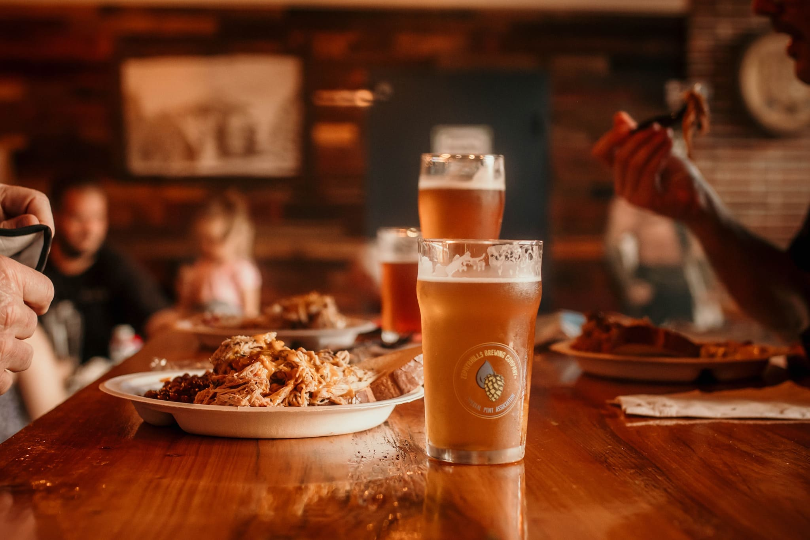

This microbrewery and taproom offers a variety of craft beers and pub fare. The menu includes burgers, sandwiches, salads, and snacks. The atmosphere is casual and the staff is friendly. It's located about 1 mile away from Villa Salem.
